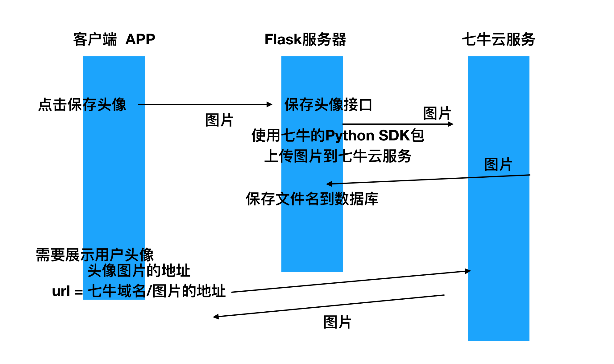
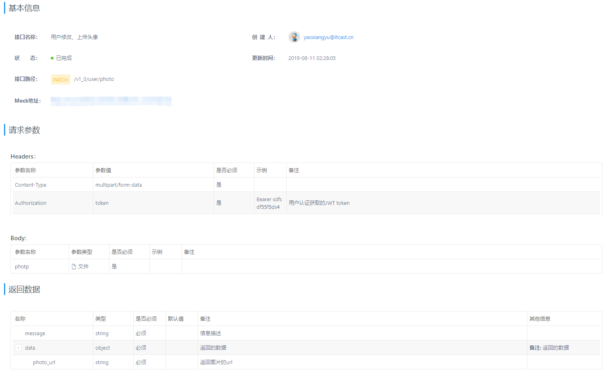

七牛云存储
[TOC]
1. 云存储
1.1 需求
在头条项目中，如用户头像、文章图片等数据需要使用文件存储系统来保存
1.2 方案
- 自己搭建文件系统服务
- 选用第三方对象存储服务
我们在头条项目中使用七牛云对象存储服务 http://www.qiniu.com。
1.3 使用
- 注册
- 新建存储空间
- 使用七牛SDK完成代码实现
七牛Python SDK 网址 https://developer.qiniu.com/kodo/sdk/1242/python
1.3.1 安装SDK
pip install qiniu
1.3.2 编码
七牛提供的上传代码参考示例
from qiniu import Auth, put_file, etag import qiniu.config #需要填写你的 Access Key 和 Secret Key access_key = 'Access_Key' secret_key = 'Secret_Key' #构建鉴权对象 q = Auth(access_key, secret_key) #要上传的空间 bucket_name = 'Bucket_Name' #上传后保存的文件名 key = 'my-python-logo.png' #生成上传 Token，可以指定过期时间等 token = q.upload_token(bucket_name, key, 3600) #要上传文件的本地路径 localfile = './sync/bbb.jpg' ret, info = put_file(token, key, localfile) print(info) assert ret['key'] == key assert ret['hash'] == etag(localfile)
2. 头条项目实现

2.1 查看common/utils/storage.py文件
修改centos虚拟机中的时间，不然从七牛拿回的token无效（过期）
date # 查看当前系统时间 yum install -y ntpdate ntpdate cn.pool.ntp.org从qiniu拿到示例代码进行修改如下（项目中已经修改过了）
- 并修改QINIU相应的配置
from qiniu import Auth, put_file, etag, put_data import qiniu.config from flask import current_app def upload_image(file_data): """ 上传图片到七牛 :param file_data: bytes 文件 :return: file_name """ # 需要填写你的 Access Key 和 Secret Key access_key = current_app.config['QINIU_ACCESS_KEY'] secret_key = current_app.config['QINIU_SECRET_KEY'] # 构建鉴权对象 q = Auth(access_key, secret_key) # 要上传的空间 bucket_name = current_app.config['QINIU_BUCKET_NAME'] # 上传到七牛后保存的文件名 # key = 'my-python-七牛.png' key = None # 生成上传 Token，可以指定过期时间等 token = q.upload_token(bucket_name, expires=1800) # # 要上传文件的本地路径 # localfile = '/Users/jemy/Documents/qiniu.png' # ret, info = put_file(token, key, localfile) ret, info = put_data(token, key, file_data) return ret['key']测试
common/utils/storage.py中upload_image函数from qiniu import Auth, put_data """测试上传图片至七牛云""" def upload_image(file_data): """上传图片到七牛 :param file_data: bytes 文件 :return: file_name""" # 需要填写你的 Access Key 和 Secret Key access_key = '从用户--秘钥管理 界面中获取的AKEY' secret_key = '从用户--秘钥管理 界面中获取的SKEY' # 构建鉴权对象 q = Auth(access_key, secret_key) # 要上传的空间 bucket_name = '存储空间名' # 上传到七牛后保存的文件名 # key = 'my-python-七牛.png' key = None # 七牛自己来给图片命名，防止图片重名 # 生成上传 Token，可以指定过期时间等 token = q.upload_token(bucket_name, expires=1800) ret, info = put_data(token, key, file_data) print(ret) print(info) return ret['key'] # 打开测试文件 with open('./1.png', 'rb') as f: file_date = f.read() file_name = upload_image(file_date) print(file_name) print('从七牛存储空间界面上获取的临时域名/{}'.format(file_name)) """"error":"expired token" date # 查看当前系统时间 yum install -y ntpdate ntpdate cn.pool.ntp.org"""
2.2 完成上传头像接口
2.2.1 接口设计 使用PATCH
PUT 修改 /user
- PUT 语义：请求修改资源时，是修改的全部字段；如果为了符合语义，就需要传递完整的数据字段
PATCH 修改 /user
PATCH 语义：请求修改资源时，只需要传递修改的数据字段即可
请求
{'photo': photo_bytes}返回
common/utils/output.py的output_json函数中，已经实现了外层数据的封装，只需要视图返回data字段中的值{'message': ;ok, 'data': { 'photo_url': photo_url } }
2.2.2 注册视图的路由
在
toutiao/resources/user/__init__.py中打开下面代码的注释user_api.add_resource(profile.PhotoResource, '/v1_0/user/photo', endpoint='Photo')
2.2.3 新建toutiao/resources/user/profile.py,完成视图函数
视图函数中的步骤
- 获取并校验请求参数
- 把图片上传到七牛，并获取文件名
- 保存图片名到数据库
- 构造并返回数据
代码如下：
from flask import g, current_app from flask_restful import Resource from flask_restful.reqparse import RequestParser from utils.parser import image_file from utils.storage import upload_image from utils.decorators import login_required # 导入用户认证装饰器 from models.user import User # 导入User模型类 from models import db class PhotoResource(Resource): """用户图像 （头像、身份证）处理""" # 用户必须登录才能修改头像 method_decorators = [login_required] def patch(self): """修改用户的资料（修改用户的头像） """ # 获取并校验请求参数 # import traceback # try: rp = RequestParser() rp.add_argument('photo', type=image_file, # 采用自定义的类型检查函数 required=True, location='files') # 必须要传该参数，且从数据所在位置是files args_dict = rp.parse_args() # 转换参数并取出args_dict参数字典，是一个字典，其中包含了photo键值对！ # print(args_dict) # 把图片上传到七牛，并获取文件名 # 注意：上传文件上传的是文件对象 file_name = upload_image(args_dict.photo.read()) # 保存图片名到数据库 # 思考：为什么只保存文件名，而不保存完整的图片链接？ # 防止url路径改变 User.query.filter(User.id==g.user_id).update({'profile_photo': file_name}) db.session.commit() # 如果commit报错，且不需要进行特殊处理，flask无需代码实现，会自动进行rollback回滚操作， # 构造并返回数据 photo_url = current_app.config['QINIU_DOMAIN'] + file_name return {'photo_url': photo_url} # except Exception: # print(traceback.format_exc()) # return {'error': traceback.format_exc()}查看在
common/utils/parser.py中的image_file函数imghr模块通过二进制数据前几位来判断是否为图片，二进制文件前几位表明了自己的文件类型
import imghdr # 第三方模块 def image_file(value): """检查是否是图片文件，用于lask_restful.reqparse.RequestParser.add_argument中的tpye参数接收 :param value: :return: """ try: file_type = imghdr.what(value) # 判断一个具体的二进制数据是否为图片类型 except Exception: raise ValueError('Invalid image.') else: if not file_type: raise ValueError('Invalid image.') else: # 必须判定该二进制数据是一个图片文件类型，才最终返回该二进制数据，否则就抛出异常 return value
2.2.4 启动app,接口测试接口
用户更细自己的头像需要先登录，该功能我们已经在JWT章节中完成
import requests, json """登录 POST /v1_0/authorizations""" url = 'http://127.0.0.1:5000/v1_0/authorizations' REDIS_SENTINELS = [('127.0.0.1', '26380'), ('127.0.0.1', '26381'), ('127.0.0.1', '26382'),] REDIS_SENTINEL_SERVICE_NAME = 'mymaster' from redis.sentinel import Sentinel _sentinel = Sentinel(REDIS_SENTINELS) redis_master = _sentinel.master_for(REDIS_SENTINEL_SERVICE_NAME) redis_master.set('app:code:13161933309', '123456') # 构造raw application/json形式的请求体 data = json.dumps({'mobile': '13161933309', 'code': '123456'}) # requests发送 POST raw application/json 请求 resp = requests.post(url, data=data, headers={'Content-Type': 'application/json'}) print(resp.json()) token = resp.json()['data']['token'] print(token) """测试上传图片接口/v1_0/user/photo，需要先登录""" url = 'http://127.0.0.1:5000/v1_0/user/photo' headers = {'Authorization': 'Bearer {}'.format(token)} # with open('./1.png', 'rb') as f: # photo = f.read() photo_obj = open('./1.png', 'rb') files_dict = {'photo': photo_obj} resp = requests.patch(url, files=files_dict, headers=headers) # files = {"zidingyi_name": open("./4_1_3.py", "rb")} # r = requests.post("http://127.0.0.1:5000/upload", files=files) print(resp.status_code) print(resp.json())
2.2.5 接口录入

- 选择/添加分类
- 添加接口
- 请求参数设置--选择form类型
- Body
- photo，类型file，必须，图像文件二进制数据
- Headers
- Authonrization，jwt_token，用户身份token
- content-type 会自动选择
- 返回数据填写
- message string 提示信息
- data object 数据
- photo_url string 图片url